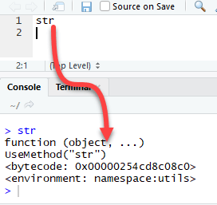
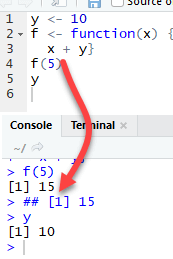
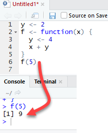

<!DOCTYPE html>

<html>

<head>

<meta charset="utf-8" />
<meta name="generator" content="pandoc" />
<meta http-equiv="X-UA-Compatible" content="IE=EDGE" />


<title>Lesson 9</title>

<script src="site_libs/jquery-1.11.3/jquery.min.js"></script>
<meta name="viewport" content="width=device-width, initial-scale=1" />
<link href="site_libs/bootstrap-3.3.5/css/flatly.min.css" rel="stylesheet" />
<script src="site_libs/bootstrap-3.3.5/js/bootstrap.min.js"></script>
<script src="site_libs/bootstrap-3.3.5/shim/html5shiv.min.js"></script>
<script src="site_libs/bootstrap-3.3.5/shim/respond.min.js"></script>
<script src="site_libs/jqueryui-1.11.4/jquery-ui.min.js"></script>
<link href="site_libs/tocify-1.9.1/jquery.tocify.css" rel="stylesheet" />
<script src="site_libs/tocify-1.9.1/jquery.tocify.js"></script>
<script src="site_libs/navigation-1.1/tabsets.js"></script>
<script src="site_libs/accessible-code-block-0.0.1/empty-anchor.js"></script>
<script src="site_libs/kePrint-0.0.1/kePrint.js"></script>
<link href="site_libs/lightable-0.0.1/lightable.css" rel="stylesheet" />
<link href="site_libs/font-awesome-5.1.0/css/all.css" rel="stylesheet" />
<link href="site_libs/font-awesome-5.1.0/css/v4-shims.css" rel="stylesheet" />
<!DOCTYPE html PUBLIC "-//W3C//DTD HTML 4.01//EN" "http://www.w3.org/TR/html4/strict.dtd">
<html>
<head>
  <meta http-equiv="Content-Type" content="text/html; charset=utf-8">
  <meta http-equiv="Content-Style-Type" content="text/css">
  <title></title>
  <meta name="Generator" content="Cocoa HTML Writer">
  <meta name="CocoaVersion" content="1504">
  <!-- this script changes the anchor position -->
  <!-- http://jsfiddle.net/ianclark001/rkocah23/ -->
<script>
(function(document, history, location) {
  var HISTORY_SUPPORT = !!(history && history.pushState);

  var anchorScrolls = {
    ANCHOR_REGEX: /^#[^ ]+$/,
    OFFSET_HEIGHT_PX: 65,

    /**
     * Establish events, and fix initial scroll position if a hash is provided.
     */
    init: function() {
      this.scrollToCurrent();
      $(window).on('hashchange', $.proxy(this, 'scrollToCurrent'));
      $('body').on('click', 'a', $.proxy(this, 'delegateAnchors'));
    },

    /**
     * Return the offset amount to deduct from the normal scroll position.
     * Modify as appropriate to allow for dynamic calculations
     */
    getFixedOffset: function() {
      return this.OFFSET_HEIGHT_PX;
    },

    /**
     * If the provided href is an anchor which resolves to an element on the
     * page, scroll to it.
     * @param  {String} href
     * @return {Boolean} - Was the href an anchor.
     */
    scrollIfAnchor: function(href, pushToHistory) {
      var match, anchorOffset;

      if(!this.ANCHOR_REGEX.test(href)) {
        return false;
      }

      match = document.getElementById(href.slice(1));

      if(match) {
        anchorOffset = $(match).offset().top - this.getFixedOffset();
        $('html, body').animate({ scrollTop: anchorOffset});

        // Add the state to history as-per normal anchor links
        if(HISTORY_SUPPORT && pushToHistory) {
          history.pushState({}, document.title, location.pathname + href);
        }
      }

      return !!match;
    },
    
    /**
     * Attempt to scroll to the current location's hash.
     */
    scrollToCurrent: function(e) {
      if(this.scrollIfAnchor(window.location.hash) && e) {
        e.preventDefault();
      }
    },

    /**
     * If the click event's target was an anchor, fix the scroll position.
     */
    delegateAnchors: function(e) {
      var elem = e.target;

      if(this.scrollIfAnchor(elem.getAttribute('href'), true)) {
        e.preventDefault();
      }
    }
  };

    $(document).ready($.proxy(anchorScrolls, 'init'));
})(window.document, window.history, window.location);
</script>

</head>
<body>
</body>
</html>

<style type="text/css">
  code{white-space: pre-wrap;}
  span.smallcaps{font-variant: small-caps;}
  span.underline{text-decoration: underline;}
  div.column{display: inline-block; vertical-align: top; width: 50%;}
  div.hanging-indent{margin-left: 1.5em; text-indent: -1.5em;}
  ul.task-list{list-style: none;}
    </style>


<style type="text/css">code{white-space: pre;}</style>
<style type="text/css" data-origin="pandoc">
code.sourceCode > span { display: inline-block; line-height: 1.25; }
code.sourceCode > span { color: inherit; text-decoration: inherit; }
code.sourceCode > span:empty { height: 1.2em; }
.sourceCode { overflow: visible; }
code.sourceCode { white-space: pre; position: relative; }
div.sourceCode { margin: 1em 0; }
pre.sourceCode { margin: 0; }
@media screen {
div.sourceCode { overflow: auto; }
}
@media print {
code.sourceCode { white-space: pre-wrap; }
code.sourceCode > span { text-indent: -5em; padding-left: 5em; }
}
pre.numberSource code
  { counter-reset: source-line 0; }
pre.numberSource code > span
  { position: relative; left: -4em; counter-increment: source-line; }
pre.numberSource code > span > a:first-child::before
  { content: counter(source-line);
    position: relative; left: -1em; text-align: right; vertical-align: baseline;
    border: none; display: inline-block;
    -webkit-touch-callout: none; -webkit-user-select: none;
    -khtml-user-select: none; -moz-user-select: none;
    -ms-user-select: none; user-select: none;
    padding: 0 4px; width: 4em;
    color: #aaaaaa;
  }
pre.numberSource { margin-left: 3em; border-left: 1px solid #aaaaaa;  padding-left: 4px; }
div.sourceCode
  {   }
@media screen {
code.sourceCode > span > a:first-child::before { text-decoration: underline; }
}
code span.al { color: #ff0000; font-weight: bold; } /* Alert */
code span.an { color: #60a0b0; font-weight: bold; font-style: italic; } /* Annotation */
code span.at { color: #7d9029; } /* Attribute */
code span.bn { color: #40a070; } /* BaseN */
code span.bu { } /* BuiltIn */
code span.cf { color: #007020; font-weight: bold; } /* ControlFlow */
code span.ch { color: #4070a0; } /* Char */
code span.cn { color: #880000; } /* Constant */
code span.co { color: #60a0b0; font-style: italic; } /* Comment */
code span.cv { color: #60a0b0; font-weight: bold; font-style: italic; } /* CommentVar */
code span.do { color: #ba2121; font-style: italic; } /* Documentation */
code span.dt { color: #902000; } /* DataType */
code span.dv { color: #40a070; } /* DecVal */
code span.er { color: #ff0000; font-weight: bold; } /* Error */
code span.ex { } /* Extension */
code span.fl { color: #40a070; } /* Float */
code span.fu { color: #06287e; } /* Function */
code span.im { } /* Import */
code span.in { color: #60a0b0; font-weight: bold; font-style: italic; } /* Information */
code span.kw { color: #007020; font-weight: bold; } /* Keyword */
code span.op { color: #666666; } /* Operator */
code span.ot { color: #007020; } /* Other */
code span.pp { color: #bc7a00; } /* Preprocessor */
code span.sc { color: #4070a0; } /* SpecialChar */
code span.ss { color: #bb6688; } /* SpecialString */
code span.st { color: #4070a0; } /* String */
code span.va { color: #19177c; } /* Variable */
code span.vs { color: #4070a0; } /* VerbatimString */
code span.wa { color: #60a0b0; font-weight: bold; font-style: italic; } /* Warning */

</style>
<script>
// apply pandoc div.sourceCode style to pre.sourceCode instead
(function() {
  var sheets = document.styleSheets;
  for (var i = 0; i < sheets.length; i++) {
    if (sheets[i].ownerNode.dataset["origin"] !== "pandoc") continue;
    try { var rules = sheets[i].cssRules; } catch (e) { continue; }
    for (var j = 0; j < rules.length; j++) {
      var rule = rules[j];
      // check if there is a div.sourceCode rule
      if (rule.type !== rule.STYLE_RULE || rule.selectorText !== "div.sourceCode") continue;
      var style = rule.style.cssText;
      // check if color or background-color is set
      if (rule.style.color === '' && rule.style.backgroundColor === '') continue;
      // replace div.sourceCode by a pre.sourceCode rule
      sheets[i].deleteRule(j);
      sheets[i].insertRule('pre.sourceCode{' + style + '}', j);
    }
  }
})();
</script>
<style type="text/css">
  pre:not([class]) {
    background-color: white;
  }
</style>


<style type="text/css">
h1 {
  font-size: 34px;
}
h1.title {
  font-size: 38px;
}
h2 {
  font-size: 30px;
}
h3 {
  font-size: 24px;
}
h4 {
  font-size: 18px;
}
h5 {
  font-size: 16px;
}
h6 {
  font-size: 12px;
}
.table th:not([align]) {
  text-align: left;
}
</style>


<link rel="stylesheet" href="style.css" type="text/css" />


<style type = "text/css">
.main-container {
  max-width: 940px;
  margin-left: auto;
  margin-right: auto;
}
code {
  color: inherit;
  background-color: rgba(0, 0, 0, 0.04);
}
img {
  max-width:100%;
}
.tabbed-pane {
  padding-top: 12px;
}
.html-widget {
  margin-bottom: 20px;
}
button.code-folding-btn:focus {
  outline: none;
}
summary {
  display: list-item;
}
</style>


<style type="text/css">
/* padding for bootstrap navbar */
body {
  padding-top: 60px;
  padding-bottom: 40px;
}
/* offset scroll position for anchor links (for fixed navbar)  */
.section h1 {
  padding-top: 65px;
  margin-top: -65px;
}
.section h2 {
  padding-top: 65px;
  margin-top: -65px;
}
.section h3 {
  padding-top: 65px;
  margin-top: -65px;
}
.section h4 {
  padding-top: 65px;
  margin-top: -65px;
}
.section h5 {
  padding-top: 65px;
  margin-top: -65px;
}
.section h6 {
  padding-top: 65px;
  margin-top: -65px;
}
.dropdown-submenu {
  position: relative;
}
.dropdown-submenu>.dropdown-menu {
  top: 0;
  left: 100%;
  margin-top: -6px;
  margin-left: -1px;
  border-radius: 0 6px 6px 6px;
}
.dropdown-submenu:hover>.dropdown-menu {
  display: block;
}
.dropdown-submenu>a:after {
  display: block;
  content: " ";
  float: right;
  width: 0;
  height: 0;
  border-color: transparent;
  border-style: solid;
  border-width: 5px 0 5px 5px;
  border-left-color: #cccccc;
  margin-top: 5px;
  margin-right: -10px;
}
.dropdown-submenu:hover>a:after {
  border-left-color: #ffffff;
}
.dropdown-submenu.pull-left {
  float: none;
}
.dropdown-submenu.pull-left>.dropdown-menu {
  left: -100%;
  margin-left: 10px;
  border-radius: 6px 0 6px 6px;
}
</style>

<script>
// manage active state of menu based on current page
$(document).ready(function () {
  // active menu anchor
  href = window.location.pathname
  href = href.substr(href.lastIndexOf('/') + 1)
  if (href === "")
    href = "index.html";
  var menuAnchor = $('a[href="' + href + '"]');

  // mark it active
  menuAnchor.parent().addClass('active');

  // if it's got a parent navbar menu mark it active as well
  menuAnchor.closest('li.dropdown').addClass('active');
});
</script>

<!-- tabsets -->

<style type="text/css">
.tabset-dropdown > .nav-tabs {
  display: inline-table;
  max-height: 500px;
  min-height: 44px;
  overflow-y: auto;
  background: white;
  border: 1px solid #ddd;
  border-radius: 4px;
}

.tabset-dropdown > .nav-tabs > li.active:before {
  content: "";
  font-family: 'Glyphicons Halflings';
  display: inline-block;
  padding: 10px;
  border-right: 1px solid #ddd;
}

.tabset-dropdown > .nav-tabs.nav-tabs-open > li.active:before {
  content: "&#xe258;";
  border: none;
}

.tabset-dropdown > .nav-tabs.nav-tabs-open:before {
  content: "";
  font-family: 'Glyphicons Halflings';
  display: inline-block;
  padding: 10px;
  border-right: 1px solid #ddd;
}

.tabset-dropdown > .nav-tabs > li.active {
  display: block;
}

.tabset-dropdown > .nav-tabs > li > a,
.tabset-dropdown > .nav-tabs > li > a:focus,
.tabset-dropdown > .nav-tabs > li > a:hover {
  border: none;
  display: inline-block;
  border-radius: 4px;
  background-color: transparent;
}

.tabset-dropdown > .nav-tabs.nav-tabs-open > li {
  display: block;
  float: none;
}

.tabset-dropdown > .nav-tabs > li {
  display: none;
}
</style>

<!-- code folding -->


<style type="text/css">

#TOC {
  margin: 25px 0px 20px 0px;
}
@media (max-width: 768px) {
#TOC {
  position: relative;
  width: 100%;
}
}

@media print {
.toc-content {
  /* see https://github.com/w3c/csswg-drafts/issues/4434 */
  float: right;
}
}

.toc-content {
  padding-left: 30px;
  padding-right: 40px;
}

div.main-container {
  max-width: 1200px;
}

div.tocify {
  width: 20%;
  max-width: 260px;
  max-height: 85%;
}

@media (min-width: 768px) and (max-width: 991px) {
  div.tocify {
    width: 25%;
  }
}

@media (max-width: 767px) {
  div.tocify {
    width: 100%;
    max-width: none;
  }
}

.tocify ul, .tocify li {
  line-height: 20px;
}

.tocify-subheader .tocify-item {
  font-size: 0.90em;
}

.tocify .list-group-item {
  border-radius: 0px;
}


</style>


</head>

<body>


<div class="container-fluid main-container">


<!-- setup 3col/9col grid for toc_float and main content  -->
<div class="row-fluid">
<div class="col-xs-12 col-sm-4 col-md-3">
<div id="TOC" class="tocify">
</div>
</div>

<div class="toc-content col-xs-12 col-sm-8 col-md-9">


<div class="navbar navbar-default  navbar-fixed-top" role="navigation">
  <div class="container">
    <div class="navbar-header">
      <button type="button" class="navbar-toggle collapsed" data-toggle="collapse" data-target="#navbar">
        <span class="icon-bar"></span>
        <span class="icon-bar"></span>
        <span class="icon-bar"></span>
      </button>
      <a class="navbar-brand" href="index.html">An R Tutorial for Beginners</a>
    </div>
    <div id="navbar" class="navbar-collapse collapse">
      <ul class="nav navbar-nav">
        <li>
  <a href="index.html">
    <span class="fas fa-home"></span>
     
    Home
  </a>
</li>
<li>
  <a href="about.html">
    <span class="fas fa-info-circle"></span>
     
    About
  </a>
</li>
<li class="dropdown">
  <a href="#" class="dropdown-toggle" data-toggle="dropdown" role="button" aria-expanded="false">
    <span class="fas fa-bars"></span>
     
    Lessons
     
    <span class="caret"></span>
  </a>
  <ul class="dropdown-menu" role="menu">
    <li class="dropdown-submenu">
      <a href="#" class="dropdown-toggle" data-toggle="dropdown" role="button" aria-expanded="false">Introduction</a>
      <ul class="dropdown-menu" role="menu">
        <li>
          <a href="R-course_lesson-1.html">Lesson 1</a>
        </li>
        <li>
          <a href="R-course_lesson-2.html">Lesson 2</a>
        </li>
        <li>
          <a href="R-course_lesson-3.html">Lesson 3</a>
        </li>
        <li>
          <a href="R-course_lesson-4.html">Lesson 4</a>
        </li>
      </ul>
    </li>
    <li class="dropdown-submenu">
      <a href="#" class="dropdown-toggle" data-toggle="dropdown" role="button" aria-expanded="false">Data Preparation</a>
      <ul class="dropdown-menu" role="menu">
        <li>
          <a href="R-course_lesson-5.html">Lesson 5</a>
        </li>
        <li>
          <a href="R-course_lesson-6.html">Lesson 6</a>
        </li>
        <li>
          <a href="R-course_lesson-7.html">Lesson 7</a>
        </li>
        <li>
          <a href="R-course_lesson-8.html">Lesson 8</a>
        </li>
        <li>
          <a href="R-course_lesson-9.html">Lesson 9</a>
        </li>
      </ul>
    </li>
    <li class="dropdown-submenu">
      <a href="#" class="dropdown-toggle" data-toggle="dropdown" role="button" aria-expanded="false">Programming</a>
      <ul class="dropdown-menu" role="menu">
        <li>
          <a href="R-course_lesson-10.html">Lesson 10</a>
        </li>
        <li>
          <a href="R-course_lesson-11.html">Lesson 11</a>
        </li>
        <li>
          <a href="R-course_lesson-12.html">Lesson 12</a>
        </li>
        <li>
          <a href="R-course_lesson-13.html">Lesson 13</a>
        </li>
        <li>
          <a href="R-course_lesson-14.html">Lesson 14</a>
        </li>
        <li>
          <a href="R-course_lesson-15.html">Lesson 15</a>
        </li>
        <li>
          <a href="R-course_lesson-16.html">Lesson 16</a>
        </li>
        <li>
          <a href="R-course_lesson-17.html">Lesson 17</a>
        </li>
      </ul>
    </li>
    <li class="dropdown-submenu">
      <a href="#" class="dropdown-toggle" data-toggle="dropdown" role="button" aria-expanded="false">Data Analysis</a>
      <ul class="dropdown-menu" role="menu">
        <li>
          <a href="R-course_lesson-18.html">Lesson 18</a>
        </li>
        <li>
          <a href="R-course_lesson-19.html">Lesson 19</a>
        </li>
        <li>
          <a href="R-course_lesson-20.html">Lesson 20</a>
        </li>
        <li>
          <a href="R-course_lesson-21.html">Lesson 21</a>
        </li>
        <li>
          <a href="R-course_lesson-22.html">Lesson 22</a>
        </li>
      </ul>
    </li>
    <li class="dropdown-submenu">
      <a href="#" class="dropdown-toggle" data-toggle="dropdown" role="button" aria-expanded="false">Data Analysis 2</a>
      <ul class="dropdown-menu" role="menu">
        <li>
          <a href="R-course_lesson-23.html">Lesson 23</a>
        </li>
        <li>
          <a href="R-course_lesson-24.html">Lesson 24</a>
        </li>
        <li>
          <a href="R-course_lesson-25.html">Lesson 25</a>
        </li>
      </ul>
    </li>
  </ul>
</li>
      </ul>
      <ul class="nav navbar-nav navbar-right">
        
      </ul>
    </div><!--/.nav-collapse -->
  </div><!--/.container -->
</div><!--/.navbar -->

<div class="fluid-row" id="header">


<h1 class="title toc-ignore">Functions in R Programming</h1>

</div>


<p><br></p>
<div id="what-is-a-function-in-r" class="section level1">
<h1>What is a Function in R?</h1>
<hr />
<p>A function, in a programming environment, is a set of instructions. A programmer builds a function to avoid <strong>repeating</strong> the same task, or reduce <strong>complexity</strong>.</p>
<p>A function should be</p>
<ul>
<li>written to carry out a specified a tasks</li>
<li>may or may not include arguments</li>
<li>contain a body</li>
<li>may or may not return one or more values.</li>
</ul>
<p>A general approach to a function is to use the argument part as inputs, feed the body part and finally return an output. The Syntax of a function is the following:</p>
<div class="sourceCode" id="cb1"><pre class="sourceCode r"><code class="sourceCode r"><span id="cb1-1"><a href="#cb1-1"></a><span class="cf">function</span> (arglist)  {</span>
<span id="cb1-2"><a href="#cb1-2"></a>  <span class="co">#Function body</span></span>
<span id="cb1-3"><a href="#cb1-3"></a>}</span></code></pre></div>
</div>
<div id="r-important-built-in-functions" class="section level1">
<h1>R important built-in functions</h1>
<hr />
<p>There are a lot of built-in function in R. R matches your input parameters with its function arguments, either by value or by position, then executes the function body. Function arguments can have default values: if you do not specify these arguments, R will take the default value.</p>
<p>Note: It is possible to see the source code of a function by running the name of the function itself in the console.</p>
<p align="center">

</p>
<p>We will see three groups of function in action + General function + Maths function + Statistical function + General functions</p>
<p>We are already familiar with general functions like <code>cbind(), rbind(), range(), sort(), order()</code> functions. Each of these functions has a specific task, takes arguments to return an output. Following are important functions one must know</p>
<div id="diff-function" class="section level2">
<h2>diff() function</h2>
<p>If you work on <strong>time series</strong>, you need to stationary the series by taking their <strong>lag values</strong>. A <strong>stationary process</strong> allows constant mean, variance and autocorrelation over time. This mainly improves the prediction of a time series. It can be easily done with the function <code>diff()</code>. We can build a random time-series data with a trend and then use the function <code>diff()</code> to stationary the series. The <code>diff()</code> function accepts one argument, a vector, and return suitable lagged and iterated difference.</p>
<p>Note: We often need to create random data, but for learning and comparison we want the numbers to be identical across machines. To ensure we all generate the same data, we use the <code>set.seed()</code> function with arbitrary values of 123. The <code>set.seed()</code> function is generated through the process of pseudorandom number generator that make every modern computers to have the same sequence of numbers. If we don’t use <code>set.seed()</code> function, we will all have different sequence of numbers.</p>
<div class="sourceCode" id="cb2"><pre class="sourceCode r"><code class="sourceCode r"><span id="cb2-1"><a href="#cb2-1"></a><span class="kw">set.seed</span>(<span class="dv">123</span>)</span>
<span id="cb2-2"><a href="#cb2-2"></a><span class="co">## Create the data</span></span>
<span id="cb2-3"><a href="#cb2-3"></a>x &lt;-<span class="st"> </span><span class="kw">rnorm</span>(<span class="dv">1000</span>)</span>
<span id="cb2-4"><a href="#cb2-4"></a>ts &lt;-<span class="st"> </span><span class="kw">cumsum</span>(x)</span>
<span id="cb2-5"><a href="#cb2-5"></a><span class="co">## Stationary the serie</span></span>
<span id="cb2-6"><a href="#cb2-6"></a>diff_ts &lt;-<span class="st"> </span><span class="kw">diff</span>(ts)</span>
<span id="cb2-7"><a href="#cb2-7"></a><span class="kw">par</span>(<span class="dt">mfrow =</span> <span class="kw">c</span>(<span class="dv">1</span>, <span class="dv">2</span>))</span>
<span id="cb2-8"><a href="#cb2-8"></a><span class="co">## Plot the series</span></span>
<span id="cb2-9"><a href="#cb2-9"></a><span class="kw">plot</span>(ts, <span class="dt">type=</span><span class="st">&#39;l&#39;</span>)</span>
<span id="cb2-10"><a href="#cb2-10"></a><span class="kw">plot</span>(<span class="kw">diff</span>(ts), <span class="dt">type =</span> <span class="st">&#39;l&#39;</span>)</span></code></pre></div>
<p></p>
</div>
<div id="length-function" class="section level2">
<h2>length() function</h2>
<p>In many cases, we want to know the length of a vector for computation or to be used in a for loop. The <code>length()</code> function counts the number of rows in vector x. The following codes import the cars dataset and return the number of rows.</p>
<p>Note: <code>length()</code> returns the number of elements in a vector. If the function is passed into a matrix or a data frame, the number of columns is returned.</p>
<div class="sourceCode" id="cb3"><pre class="sourceCode r"><code class="sourceCode r"><span id="cb3-1"><a href="#cb3-1"></a>dt &lt;-<span class="st"> </span>cars</span>
<span id="cb3-2"><a href="#cb3-2"></a><span class="co">## number columns</span></span>
<span id="cb3-3"><a href="#cb3-3"></a><span class="kw">length</span>(dt)</span></code></pre></div>
<pre><code>## [1] 2</code></pre>
<div class="sourceCode" id="cb5"><pre class="sourceCode r"><code class="sourceCode r"><span id="cb5-1"><a href="#cb5-1"></a><span class="co">## number rows</span></span>
<span id="cb5-2"><a href="#cb5-2"></a><span class="kw">length</span>(dt[, <span class="dv">1</span>])</span></code></pre></div>
<pre><code>## [1] 50</code></pre>
</div>
</div>
<div id="math-functions" class="section level1">
<h1>Math functions</h1>
<hr />
<p>R has an array of mathematical functions.</p>
<table class="table table-striped table-hover" style="margin-left: auto; margin-right: auto;">
<thead>
<tr>
<th style="text-align:left;">
Operator
</th>
<th style="text-align:left;">
Description
</th>
</tr>
</thead>
<tbody>
<tr>
<td style="text-align:left;">
abs(x)
</td>
<td style="text-align:left;">
Takes the absolute value of x
</td>
</tr>
<tr>
<td style="text-align:left;">
log(x, base = y)
</td>
<td style="text-align:left;">
Takes the logarithm of x with base y; if base is not specified, returns the natural logarithm
</td>
</tr>
<tr>
<td style="text-align:left;">
exp(x)
</td>
<td style="text-align:left;">
Returns the exponential of x
</td>
</tr>
<tr>
<td style="text-align:left;">
sqrt(x)
</td>
<td style="text-align:left;">
Returns the square root of x
</td>
</tr>
<tr>
<td style="text-align:left;">
factorial(x)
</td>
<td style="text-align:left;">
Returns the factorial of x (x!)
</td>
</tr>
</tbody>
</table>
<!-- | Operator | Description | -->
<!-- |:---------|:------------| -->
<!-- | abs(x) | Takes the absolute value of x | -->
<!-- | log(x, base = y) | Takes the logarithm of x with base y; if base is not specified, returns the natural logarithm | -->
<!-- | exp(x) | Returns the exponential of x | -->
<!-- | sqrt(x) |    Returns the square root of x | -->
<!-- | factorial(x) | Returns the factorial of x (x!)  | -->
<div class="sourceCode" id="cb7"><pre class="sourceCode r"><code class="sourceCode r"><span id="cb7-1"><a href="#cb7-1"></a><span class="co"># sequence of number from 44 to 55 both including incremented by 1</span></span>
<span id="cb7-2"><a href="#cb7-2"></a>x_vector &lt;-<span class="st"> </span><span class="kw">seq</span>(<span class="dv">45</span>, <span class="dv">55</span>, <span class="dt">by =</span> <span class="dv">1</span>)</span>
<span id="cb7-3"><a href="#cb7-3"></a><span class="co">#logarithm</span></span>
<span id="cb7-4"><a href="#cb7-4"></a><span class="kw">log</span>(x_vector)</span></code></pre></div>
<pre><code>##  [1] 3.806662 3.828641 3.850148 3.871201 3.891820 3.912023 3.931826 3.951244
##  [9] 3.970292 3.988984 4.007333</code></pre>
<div class="sourceCode" id="cb9"><pre class="sourceCode r"><code class="sourceCode r"><span id="cb9-1"><a href="#cb9-1"></a><span class="co">#exponential</span></span>
<span id="cb9-2"><a href="#cb9-2"></a><span class="kw">exp</span>(x_vector)</span></code></pre></div>
<pre><code>##  [1] 3.493427e+19 9.496119e+19 2.581313e+20 7.016736e+20 1.907347e+21
##  [6] 5.184706e+21 1.409349e+22 3.831008e+22 1.041376e+23 2.830753e+23
## [11] 7.694785e+23</code></pre>
<div class="sourceCode" id="cb11"><pre class="sourceCode r"><code class="sourceCode r"><span id="cb11-1"><a href="#cb11-1"></a><span class="co">#squared root</span></span>
<span id="cb11-2"><a href="#cb11-2"></a><span class="kw">sqrt</span>(x_vector)</span></code></pre></div>
<pre><code>##  [1] 6.708204 6.782330 6.855655 6.928203 7.000000 7.071068 7.141428 7.211103
##  [9] 7.280110 7.348469 7.416198</code></pre>
<div class="sourceCode" id="cb13"><pre class="sourceCode r"><code class="sourceCode r"><span id="cb13-1"><a href="#cb13-1"></a><span class="co">#factorial</span></span>
<span id="cb13-2"><a href="#cb13-2"></a><span class="kw">factorial</span>(x_vector)</span></code></pre></div>
<pre><code>##  [1] 1.196222e+56 5.502622e+57 2.586232e+59 1.241392e+61 6.082819e+62
##  [6] 3.041409e+64 1.551119e+66 8.065818e+67 4.274883e+69 2.308437e+71
## [11] 1.269640e+73</code></pre>
</div>
<div id="statistical-functions" class="section level1">
<h1>Statistical functions</h1>
<hr />
<p>R standard installation contains wide range of statistical functions. In this tutorial, we will briefly look at the most important function.</p>
<p><strong>Basic statistic functions</strong></p>
<table class="table table-striped table-hover" style="margin-left: auto; margin-right: auto;">
<thead>
<tr>
<th style="text-align:left;">
Operator
</th>
<th style="text-align:left;">
Description
</th>
</tr>
</thead>
<tbody>
<tr>
<td style="text-align:left;">
mean(x)
</td>
<td style="text-align:left;">
Mean of x
</td>
</tr>
<tr>
<td style="text-align:left;">
median(x)
</td>
<td style="text-align:left;">
Median of x
</td>
</tr>
<tr>
<td style="text-align:left;">
var(x)
</td>
<td style="text-align:left;">
Variance of x
</td>
</tr>
<tr>
<td style="text-align:left;">
sd(x)
</td>
<td style="text-align:left;">
Standard deviation of x
</td>
</tr>
<tr>
<td style="text-align:left;">
scale(x)
</td>
<td style="text-align:left;">
Standard scores (z-scores) of x
</td>
</tr>
<tr>
<td style="text-align:left;">
quantile(x)
</td>
<td style="text-align:left;">
The quartiles of x
</td>
</tr>
<tr>
<td style="text-align:left;">
summary(x)
</td>
<td style="text-align:left;">
Summary of x: mean, min, max etc…
</td>
</tr>
</tbody>
</table>
<table>
<thead>
<tr class="header">
<th align="left">Operator</th>
<th align="left">Description</th>
</tr>
</thead>
<tbody>
<tr class="odd">
<td align="left">mean(x)</td>
<td align="left">Mean of x</td>
</tr>
<tr class="even">
<td align="left">median(x)</td>
<td align="left">Median of x</td>
</tr>
<tr class="odd">
<td align="left">var(x)</td>
<td align="left">Variance of x</td>
</tr>
<tr class="even">
<td align="left">sd(x)</td>
<td align="left">Standard deviation of x</td>
</tr>
<tr class="odd">
<td align="left">scale(x)</td>
<td align="left">Standard scores (z-scores) of x</td>
</tr>
<tr class="even">
<td align="left">quantile(x)</td>
<td align="left">The quartiles of x</td>
</tr>
<tr class="odd">
<td align="left">summary(x)</td>
<td align="left">Summary of x: mean, min, max etc…</td>
</tr>
</tbody>
</table>
<div class="sourceCode" id="cb15"><pre class="sourceCode r"><code class="sourceCode r"><span id="cb15-1"><a href="#cb15-1"></a>speed &lt;-<span class="st"> </span>dt<span class="op">$</span>speed</span>
<span id="cb15-2"><a href="#cb15-2"></a>speed</span></code></pre></div>
<pre><code>##  [1]  4  4  7  7  8  9 10 10 10 11 11 12 12 12 12 13 13 13 13 14 14 14 14 15 15
## [26] 15 16 16 17 17 17 18 18 18 18 19 19 19 20 20 20 20 20 22 23 24 24 24 24 25</code></pre>
<div class="sourceCode" id="cb17"><pre class="sourceCode r"><code class="sourceCode r"><span id="cb17-1"><a href="#cb17-1"></a><span class="co"># Mean speed of cars dataset</span></span>
<span id="cb17-2"><a href="#cb17-2"></a><span class="kw">mean</span>(speed)</span></code></pre></div>
<pre><code>## [1] 15.4</code></pre>
<div class="sourceCode" id="cb19"><pre class="sourceCode r"><code class="sourceCode r"><span id="cb19-1"><a href="#cb19-1"></a><span class="co"># Median speed of cars dataset</span></span>
<span id="cb19-2"><a href="#cb19-2"></a><span class="kw">median</span>(speed)</span></code></pre></div>
<pre><code>## [1] 15</code></pre>
<div class="sourceCode" id="cb21"><pre class="sourceCode r"><code class="sourceCode r"><span id="cb21-1"><a href="#cb21-1"></a><span class="co"># Variance speed of cars dataset</span></span>
<span id="cb21-2"><a href="#cb21-2"></a><span class="kw">var</span>(speed)</span></code></pre></div>
<pre><code>## [1] 27.95918</code></pre>
<div class="sourceCode" id="cb23"><pre class="sourceCode r"><code class="sourceCode r"><span id="cb23-1"><a href="#cb23-1"></a><span class="co"># Standard deviation speed of cars dataset</span></span>
<span id="cb23-2"><a href="#cb23-2"></a><span class="kw">sd</span>(speed)</span></code></pre></div>
<pre><code>## [1] 5.287644</code></pre>
<div class="sourceCode" id="cb25"><pre class="sourceCode r"><code class="sourceCode r"><span id="cb25-1"><a href="#cb25-1"></a><span class="co"># Standardize vector speed of cars dataset      </span></span>
<span id="cb25-2"><a href="#cb25-2"></a><span class="kw">head</span>(<span class="kw">scale</span>(speed), <span class="dv">5</span>)</span></code></pre></div>
<pre><code>##           [,1]
## [1,] -2.155969
## [2,] -2.155969
## [3,] -1.588609
## [4,] -1.588609
## [5,] -1.399489</code></pre>
<div class="sourceCode" id="cb27"><pre class="sourceCode r"><code class="sourceCode r"><span id="cb27-1"><a href="#cb27-1"></a><span class="co"># Quantile speed of cars dataset</span></span>
<span id="cb27-2"><a href="#cb27-2"></a><span class="kw">quantile</span>(speed)</span></code></pre></div>
<pre><code>##   0%  25%  50%  75% 100% 
##    4   12   15   19   25</code></pre>
<div class="sourceCode" id="cb29"><pre class="sourceCode r"><code class="sourceCode r"><span id="cb29-1"><a href="#cb29-1"></a><span class="co"># Summary speed of cars dataset</span></span>
<span id="cb29-2"><a href="#cb29-2"></a><span class="kw">summary</span>(speed)</span></code></pre></div>
<pre><code>##    Min. 1st Qu.  Median    Mean 3rd Qu.    Max. 
##     4.0    12.0    15.0    15.4    19.0    25.0</code></pre>
<p>Up to this point, we have learned a lot of R built-in functions.</p>
<p>Note: Be careful with the class of the argument, i.e. numeric, Boolean or string. For instance, if we need to pass a string value, we need to enclose the string in quotation mark: “ABC” .</p>
</div>
<div id="write-function-in-r" class="section level1">
<h1>Write function in R</h1>
<hr />
<p>In some occasion, we need to write our own function because we have to accomplish a particular task and no ready made function exists. A user-defined function involves a name, arguments and a body.</p>
<div class="sourceCode" id="cb31"><pre class="sourceCode r"><code class="sourceCode r"><span id="cb31-1"><a href="#cb31-1"></a>function.name &lt;-<span class="st"> </span><span class="cf">function</span>(arguments) </span>
<span id="cb31-2"><a href="#cb31-2"></a>{</span>
<span id="cb31-3"><a href="#cb31-3"></a>    computations on the arguments   </span>
<span id="cb31-4"><a href="#cb31-4"></a>    some other code</span>
<span id="cb31-5"><a href="#cb31-5"></a>}</span></code></pre></div>
<p>Note: A good practice is to name a user-defined function different from a built-in function. It avoids confusion.</p>
<div id="one-argument-function" class="section level2">
<h2>One argument function</h2>
<p>In the next snippet, we define a simple square function. The function accepts a value and returns the square of the value.</p>
<div class="sourceCode" id="cb32"><pre class="sourceCode r"><code class="sourceCode r"><span id="cb32-1"><a href="#cb32-1"></a>square_function &lt;-<span class="st"> </span><span class="cf">function</span>(n) </span>
<span id="cb32-2"><a href="#cb32-2"></a>{</span>
<span id="cb32-3"><a href="#cb32-3"></a>  <span class="co"># compute the square of integer `n`</span></span>
<span id="cb32-4"><a href="#cb32-4"></a>  n<span class="op">^</span><span class="dv">2</span></span>
<span id="cb32-5"><a href="#cb32-5"></a>}  </span>
<span id="cb32-6"><a href="#cb32-6"></a><span class="co"># calling the function and passing value 4</span></span>
<span id="cb32-7"><a href="#cb32-7"></a><span class="kw">square_function</span>(<span class="dv">4</span>)</span></code></pre></div>
<pre><code>## [1] 16</code></pre>
<p><strong>Code Explanation:</strong></p>
<ul>
<li>The function is named square_function; it can be called whatever we want.</li>
<li>It receives an argument “n”. We didn’t specify the type of variable so that the user can pass an integer, a vector or a matrix</li>
<li>The function takes the input “n” and returns the square of the input.</li>
</ul>
<p>When you are done using the function, we can remove it with the <code>rm()</code> function.</p>
<div class="sourceCode" id="cb34"><pre class="sourceCode r"><code class="sourceCode r"><span id="cb34-1"><a href="#cb34-1"></a><span class="co"># after you create the function</span></span>
<span id="cb34-2"><a href="#cb34-2"></a><span class="kw">rm</span>(square_function)</span>
<span id="cb34-3"><a href="#cb34-3"></a>square_function</span></code></pre></div>
<pre><code>## Error in eval(expr, envir, enclos): oggetto &quot;square_function&quot; non trovato</code></pre>
</div>
<div id="environment-scoping" class="section level2">
<h2>Environment Scoping</h2>
<p>In R, the <strong>environment</strong> is a <strong>collection</strong> of objects like functions, variables, data frame, etc.</p>
<p>R opens an environment each time Rstudio is prompted.</p>
<p>The top-level environment available is the <strong>global environment</strong>, called <code>R_GlobalEnv</code>. And we have the <strong>local environment</strong>.</p>
<p>We can list the content of the current environment.</p>
<div class="sourceCode" id="cb36"><pre class="sourceCode r"><code class="sourceCode r"><span id="cb36-1"><a href="#cb36-1"></a><span class="kw">ls</span>(<span class="kw">environment</span>())</span></code></pre></div>
<pre><code>##   [1] &quot;a&quot;                      &quot;A&quot;                      &quot;accuracy_Test&quot;         
##   [4] &quot;add_producer&quot;           &quot;add_row&quot;                &quot;alpha&quot;                 
##   [7] &quot;anova&quot;                  &quot;anova_one_way&quot;          &quot;anova_two_way&quot;         
##  [10] &quot;average_missing&quot;        &quot;avg&quot;                    &quot;b&quot;                     
##  [13] &quot;B&quot;                      &quot;begin&quot;                  &quot;below_ave&quot;             
##  [16] &quot;beta&quot;                   &quot;box_plot&quot;               &quot;c&quot;                     
##  [19] &quot;category&quot;               &quot;center&quot;                 &quot;center_df&quot;             
##  [22] &quot;center_reshape&quot;         &quot;cluster&quot;                &quot;col&quot;                   
##  [25] &quot;color_vector&quot;           &quot;continuous&quot;             &quot;corr&quot;                  
##  [28] &quot;create_train_test&quot;      &quot;d&quot;                      &quot;data&quot;                  
##  [31] &quot;data_adult&quot;             &quot;data_adult_drop&quot;        &quot;data_adult_rescale&quot;    
##  [34] &quot;data_air&quot;               &quot;data_air_nona&quot;          &quot;data_frame&quot;            
##  [37] &quot;data_histogram&quot;         &quot;data_rcorr&quot;             &quot;data_test&quot;             
##  [40] &quot;data_train&quot;             &quot;dataset&quot;                &quot;day_vector&quot;            
##  [43] &quot;df&quot;                     &quot;df_titanic&quot;             &quot;df_titanic_drop&quot;       
##  [46] &quot;df_titanic_impute_mean&quot; &quot;df_titanic_replace&quot;     &quot;diff_ts&quot;               
##  [49] &quot;directory&quot;              &quot;dt&quot;                     &quot;dt_l&quot;                  
##  [52] &quot;dt_s&quot;                   &quot;dt2&quot;                    &quot;elbow&quot;                 
##  [55] &quot;example&quot;                &quot;example_1&quot;              &quot;example_2&quot;             
##  [58] &quot;f1&quot;                     &quot;f1_2&quot;                   &quot;factor&quot;                
##  [61] &quot;factor_color&quot;           &quot;factor_day&quot;             &quot;factor_gender_vector&quot;  
##  [64] &quot;fcars&quot;                  &quot;fit&quot;                    &quot;formula&quot;               
##  [67] &quot;formula_2&quot;              &quot;fruit&quot;                  &quot;gender_vector&quot;         
##  [70] &quot;graph&quot;                  &quot;hm.palette&quot;             &quot;i&quot;                     
##  [73] &quot;img&quot;                    &quot;iris&quot;                   &quot;iris_na&quot;               
##  [76] &quot;iris_no_header&quot;         &quot;iris_row_no_header&quot;     &quot;iris_row_with_header&quot;  
##  [79] &quot;kmean_withinss&quot;         &quot;list&quot;                   &quot;list_na&quot;               
##  [82] &quot;lmn_cars&quot;               &quot;lmxcars&quot;                &quot;logical_vector&quot;        
##  [85] &quot;logit&quot;                  &quot;logit_2&quot;                &quot;loop&quot;                  
##  [88] &quot;m1&quot;                     &quot;m2&quot;                     &quot;m3&quot;                    
##  [91] &quot;mat&quot;                    &quot;mat_1&quot;                  &quot;mat_2&quot;                 
##  [94] &quot;matrix_a&quot;               &quot;matrix_a1&quot;              &quot;matrix_a2&quot;             
##  [97] &quot;matrix_b&quot;               &quot;matrix_c&quot;               &quot;matrix_d&quot;              
## [100] &quot;max_k&quot;                  &quot;mean_mpg&quot;               &quot;median_missing&quot;        
## [103] &quot;model&quot;                  &quot;movies&quot;                 &quot;movies_lower&quot;          
## [106] &quot;my_graph&quot;               &quot;my_list&quot;                &quot;open_folder&quot;           
## [109] &quot;p&quot;                      &quot;p_value&quot;                &quot;path&quot;                  
## [112] &quot;PATH&quot;                   &quot;PATH_sas&quot;               &quot;PATH_spss&quot;             
## [115] &quot;PATH_stata&quot;             &quot;pc_cluster&quot;             &quot;pc_cluster_2&quot;          
## [118] &quot;prec&quot;                   &quot;precision&quot;              &quot;precision_2&quot;           
## [121] &quot;predict&quot;                &quot;predict_2&quot;              &quot;price&quot;                 
## [124] &quot;producers&quot;              &quot;quake&quot;                  &quot;quake_1&quot;               
## [127] &quot;quantity&quot;               &quot;r&quot;                      &quot;rec&quot;                   
## [130] &quot;recall&quot;                 &quot;recall_2&quot;               &quot;recast_data&quot;           
## [133] &quot;rescale_df&quot;             &quot;ROCRperf&quot;               &quot;ROCRpred&quot;              
## [136] &quot;slice_vector&quot;           &quot;smn_cars&quot;               &quot;smxcars&quot;               
## [139] &quot;speed&quot;                  &quot;stock&quot;                  &quot;sugar_cookie&quot;          
## [142] &quot;sum_vect&quot;               &quot;table_mat&quot;              &quot;table_mat_2&quot;           
## [145] &quot;test&quot;                   &quot;top_one_percent&quot;        &quot;ts&quot;                    
## [148] &quot;vec_bool&quot;               &quot;vec_chr&quot;                &quot;vec_num&quot;               
## [151] &quot;vect&quot;                   &quot;vect_1&quot;                 &quot;vect_2&quot;                
## [154] &quot;wss&quot;                    &quot;x&quot;                      &quot;x_vector&quot;              
## [157] &quot;y&quot;                      &quot;z&quot;</code></pre>
<p>The above list will vary for you based on the historic code you execute in R Studio.</p>
<p>Note that n, the argument of the square_function function is <strong>not in this global environment</strong>.</p>
<p>A <strong>new</strong> environment is created for each function. In the above example, the function <code>square_function()</code> creates a new environment inside the global environment.</p>
<p>To clarify the difference between <strong>global</strong> and <strong>local</strong> environment, let’s study the following example</p>
<p>These function takes a value x as an argument and add it to y define outside and inside the function</p>
<p align="center">

</p>
<p>The function f returns the output 15. This is because y is defined in the global environment. Any variable defined in the global environment can be used locally. The variable y has the value of 10 during all function calls and is accessible at any time.</p>
<p>Let’s see what happens if the variable y is defined inside the function.</p>
<p>We need to dropp <code>y</code> prior to run this code using rm r</p>
<p align="center">

</p>
<p>The output is also 15 when we call <code>f(5)</code> but returns an error when we try to print the value y. The variable y is not in the global environment.</p>
<p>Finally, R uses the most recent variable definition to pass inside the body of a function. Let’s consider the following example:</p>
<p align="center">

</p>
<p>R ignores the y values defined outside the function because we explicitly created a y variable inside the body of the function.</p>
</div>
<div id="multi-arguments-function" class="section level2">
<h2>Multi arguments function</h2>
<p>We can write a function with more than one argument. Consider the function called “times”. It is a straightforward function multiplying two variables.</p>
<div class="sourceCode" id="cb38"><pre class="sourceCode r"><code class="sourceCode r"><span id="cb38-1"><a href="#cb38-1"></a>times &lt;-<span class="st"> </span><span class="cf">function</span>(x, y) {</span>
<span id="cb38-2"><a href="#cb38-2"></a>  x<span class="op">*</span>y</span>
<span id="cb38-3"><a href="#cb38-3"></a>}</span>
<span id="cb38-4"><a href="#cb38-4"></a><span class="kw">times</span>(<span class="dv">2</span>, <span class="dv">4</span>)</span></code></pre></div>
<pre><code>## [1] 8</code></pre>
</div>
</div>
<div id="when-should-we-write-function" class="section level1">
<h1>When should we write function?</h1>
<hr />
<p>Data scientist need to do many repetitive tasks. Most of the time, we copy and paste chunks of code repetitively. For example, normalization of a variable is highly recommended before we run a machine learning algorithm. The formula to normalize a variable is:</p>
<p><span class="math display">\[\text{normalize}=\frac{x-x_\text{min}}{x_\text{max}-x_\text{min}}.\]</span></p>
<p>We already know how to use the min() and max() function in R. We use the tibble library to create the data frame. Tibble is so far the most convenient function to create a data set from scratch.</p>
<div class="sourceCode" id="cb40"><pre class="sourceCode r"><code class="sourceCode r"><span id="cb40-1"><a href="#cb40-1"></a><span class="kw">library</span>(tibble)</span>
<span id="cb40-2"><a href="#cb40-2"></a><span class="co"># Create a data frame</span></span>
<span id="cb40-3"><a href="#cb40-3"></a>data_frame &lt;-<span class="st"> </span><span class="kw">tibble</span>(  </span>
<span id="cb40-4"><a href="#cb40-4"></a>  <span class="dt">c1 =</span> <span class="kw">rnorm</span>(<span class="dv">50</span>, <span class="dv">5</span>, <span class="fl">1.5</span>), </span>
<span id="cb40-5"><a href="#cb40-5"></a>  <span class="dt">c2 =</span> <span class="kw">rnorm</span>(<span class="dv">50</span>, <span class="dv">5</span>, <span class="fl">1.5</span>),    </span>
<span id="cb40-6"><a href="#cb40-6"></a>  <span class="dt">c3 =</span> <span class="kw">rnorm</span>(<span class="dv">50</span>, <span class="dv">5</span>, <span class="fl">1.5</span>),    </span>
<span id="cb40-7"><a href="#cb40-7"></a>)</span></code></pre></div>
<p>We will proceed in two steps to compute the function described above. In the first step, we will create a variable called c1_norm which is the rescaling of c1. In step two, we just copy and paste the code of c1_norm and change with c2 and c3.</p>
<p>Detail of the function with the column c1:</p>
<ul>
<li>Nominator: <code>data_frame$c1 - min(data_frame$c1))</code></li>
<li>Denominator: <code>max(data_frame$c1) - min(data_frame$c1))</code></li>
</ul>
<p>Therefore, we can divide them to get the normalized value of column c1:</p>
<div class="sourceCode" id="cb41"><pre class="sourceCode r"><code class="sourceCode r"><span id="cb41-1"><a href="#cb41-1"></a>(data_frame<span class="op">$</span>c1 <span class="op">-</span><span class="st"> </span><span class="kw">min</span>(data_frame<span class="op">$</span>c1)) <span class="op">/</span><span class="st"> </span>(<span class="kw">max</span>(data_frame<span class="op">$</span>c1) <span class="op">-</span><span class="st"> </span><span class="kw">min</span>(data_frame<span class="op">$</span>c1))    </span></code></pre></div>
<p>We can create c1_norm, c2_norm and c3_norm:</p>
<div class="sourceCode" id="cb42"><pre class="sourceCode r"><code class="sourceCode r"><span id="cb42-1"><a href="#cb42-1"></a><span class="co"># Create c1_norm: rescaling of c1       </span></span>
<span id="cb42-2"><a href="#cb42-2"></a>data_frame<span class="op">$</span>c1_norm &lt;-<span class="st"> </span>(data_frame<span class="op">$</span>c1 <span class="op">-</span><span class="st"> </span><span class="kw">min</span>(data_frame<span class="op">$</span>c1)) <span class="op">/</span><span class="st"> </span>(<span class="kw">max</span>(data_frame<span class="op">$</span>c1) <span class="op">-</span><span class="st"> </span><span class="kw">min</span>(data_frame<span class="op">$</span>c1))</span>
<span id="cb42-3"><a href="#cb42-3"></a><span class="co"># show the first five values</span></span>
<span id="cb42-4"><a href="#cb42-4"></a><span class="kw">head</span>(data_frame<span class="op">$</span>c1_norm, <span class="dv">5</span>)</span></code></pre></div>
<pre><code>## [1] 0.2886787 0.2804736 0.4703763 0.4491567 0.0000000</code></pre>
<p>It works. We can copy and paste</p>
<div class="sourceCode" id="cb44"><pre class="sourceCode r"><code class="sourceCode r"><span id="cb44-1"><a href="#cb44-1"></a>data_frame<span class="op">$</span>c1_norm &lt;-<span class="st"> </span>(data_frame<span class="op">$</span>c1 <span class="op">-</span><span class="st"> </span><span class="kw">min</span>(data_frame<span class="op">$</span>c1)) <span class="op">/</span><span class="st"> </span>(<span class="kw">max</span>(data_frame<span class="op">$</span>c1) <span class="op">-</span><span class="st"> </span><span class="kw">min</span>(data_frame<span class="op">$</span>c1))</span></code></pre></div>
<p>then change c1_norm to c2_norm and c1 to c2. We do the same to create c3_norm</p>
<div class="sourceCode" id="cb45"><pre class="sourceCode r"><code class="sourceCode r"><span id="cb45-1"><a href="#cb45-1"></a>data_frame<span class="op">$</span>c2_norm &lt;-<span class="st"> </span>(data_frame<span class="op">$</span>c2 <span class="op">-</span><span class="st"> </span><span class="kw">min</span>(data_frame<span class="op">$</span>c2)) <span class="op">/</span><span class="st"> </span>(<span class="kw">max</span>(data_frame<span class="op">$</span>c2) <span class="op">-</span><span class="st"> </span><span class="kw">min</span>(data_frame<span class="op">$</span>c2))</span>
<span id="cb45-2"><a href="#cb45-2"></a>data_frame<span class="op">$</span>c3_norm &lt;-<span class="st"> </span>(data_frame<span class="op">$</span>c3 <span class="op">-</span><span class="st"> </span><span class="kw">min</span>(data_frame<span class="op">$</span>c3)) <span class="op">/</span><span class="st"> </span>(<span class="kw">max</span>(data_frame<span class="op">$</span>c3) <span class="op">-</span><span class="st"> </span><span class="kw">min</span>(data_frame<span class="op">$</span>c3))</span></code></pre></div>
<p>We perfectly rescaled the variables c1, c2 and c3.</p>
<p>However, this method is prone to mistake. We could copy and forget to change the column name after pasting. Therefore, a good practice is to write a function each time you need to paste same code more than twice. We can rearrange the code into a formula and call it whenever it is needed. To write our own function, we need to give:</p>
<ul>
<li>Name: normalize.</li>
<li>the number of arguments: We only need one argument, which is the column we use in our computation.</li>
<li>The body: this is simply the formula we want to return.</li>
</ul>
<p>We will proceed step by step to create the function normalize.</p>
<p><strong>Step 1)</strong> We create the <strong>nominator</strong>, which is . In R, we can store the nominator in a variable like this:</p>
<div class="sourceCode" id="cb46"><pre class="sourceCode r"><code class="sourceCode r"><span id="cb46-1"><a href="#cb46-1"></a>nominator &lt;-<span class="st"> </span>x<span class="op">-</span><span class="kw">min</span>(x)</span></code></pre></div>
<p><strong>Step 2)</strong> We compute the <strong>denominator</strong> . We can replicate the idea of step 1 and store the computation in a variable:</p>
<div class="sourceCode" id="cb47"><pre class="sourceCode r"><code class="sourceCode r"><span id="cb47-1"><a href="#cb47-1"></a>denominator &lt;-<span class="st"> </span><span class="kw">max</span>(x)<span class="op">-</span><span class="kw">min</span>(x)</span></code></pre></div>
<p><strong>Step 3)</strong> We perform the division between the nominator and denominator.</p>
<div class="sourceCode" id="cb48"><pre class="sourceCode r"><code class="sourceCode r"><span id="cb48-1"><a href="#cb48-1"></a>normalize &lt;-<span class="st"> </span>nominator<span class="op">/</span>denominator</span></code></pre></div>
<p><strong>Step 4)</strong> To return value to calling function we need to pass normalize inside <code>return()</code> to get the output of the function.</p>
<div class="sourceCode" id="cb49"><pre class="sourceCode r"><code class="sourceCode r"><span id="cb49-1"><a href="#cb49-1"></a><span class="kw">return</span>(normalize)</span></code></pre></div>
<p><strong>Step 5)</strong> We are ready to use the function by wrapping everything inside the bracket.</p>
<div class="sourceCode" id="cb50"><pre class="sourceCode r"><code class="sourceCode r"><span id="cb50-1"><a href="#cb50-1"></a>normalize &lt;-<span class="st"> </span><span class="cf">function</span>(x){</span>
<span id="cb50-2"><a href="#cb50-2"></a>  <span class="co"># step 1: create the nominator</span></span>
<span id="cb50-3"><a href="#cb50-3"></a>  nominator &lt;-<span class="st"> </span>x <span class="op">-</span><span class="st"> </span><span class="kw">min</span>(x)</span>
<span id="cb50-4"><a href="#cb50-4"></a>  <span class="co"># step 2: create the denominator</span></span>
<span id="cb50-5"><a href="#cb50-5"></a>  denominator &lt;-<span class="st"> </span><span class="kw">max</span>(x) <span class="op">-</span><span class="st"> </span><span class="kw">min</span>(x)</span>
<span id="cb50-6"><a href="#cb50-6"></a>  <span class="co"># step 3: divide nominator by denominator</span></span>
<span id="cb50-7"><a href="#cb50-7"></a>  normalize &lt;-<span class="st"> </span>nominator <span class="op">/</span><span class="st"> </span>denominator</span>
<span id="cb50-8"><a href="#cb50-8"></a>  <span class="co"># return the value</span></span>
<span id="cb50-9"><a href="#cb50-9"></a>  <span class="kw">return</span>(normalize)</span>
<span id="cb50-10"><a href="#cb50-10"></a>}</span></code></pre></div>
<p>Let’s test our function with the variable c1:</p>
<div class="sourceCode" id="cb51"><pre class="sourceCode r"><code class="sourceCode r"><span id="cb51-1"><a href="#cb51-1"></a><span class="kw">normalize</span>(data_frame<span class="op">$</span>c1)</span></code></pre></div>
<pre><code>##  [1] 0.2886787 0.2804736 0.4703763 0.4491567 0.0000000 0.6670762 0.5201213
##  [8] 0.9226957 0.6010405 0.3906637 0.9935270 1.0000000 0.2472571 0.5608726
## [15] 0.4344636 0.5084751 0.5159993 0.2392318 0.5267855 0.7987615 0.4432263
## [22] 0.4434425 0.7335992 0.6406569 0.1673950 0.5161877 0.7809786 0.7367032
## [29] 0.5517526 0.6077342 0.2513036 0.5294877 0.2963623 0.3886087 0.6475707
## [36] 0.2624606 0.5233160 0.5533098 0.4839211 0.8123155 0.2837454 0.5863482
## [43] 0.4571924 0.4252497 0.5599546 0.2841072 0.2296527 0.3818332 0.7992279
## [50] 0.4840796</code></pre>
<p>It works perfectly. We created our first function.</p>
<p>Functions are more comprehensive way to perform a repetitive task. We can use the normalize formula over different columns, like below:</p>
<div class="sourceCode" id="cb53"><pre class="sourceCode r"><code class="sourceCode r"><span id="cb53-1"><a href="#cb53-1"></a>data_frame<span class="op">$</span>c1_norm_function &lt;-<span class="st"> </span><span class="kw">normalize</span>(data_frame<span class="op">$</span>c1)</span>
<span id="cb53-2"><a href="#cb53-2"></a>data_frame<span class="op">$</span>c2_norm_function &lt;-<span class="st"> </span><span class="kw">normalize</span>(data_frame<span class="op">$</span>c2)</span>
<span id="cb53-3"><a href="#cb53-3"></a>data_frame<span class="op">$</span>c3_norm_function &lt;-<span class="st"> </span><span class="kw">normalize</span>(data_frame<span class="op">$</span>c3)</span></code></pre></div>
<p>Even though the example is simple, we can infer the power of a formula. The above code is easier to read and especially avoid to mistakes when pasting codes.</p>
</div>
<div id="functions-with-condition" class="section level1">
<h1>Functions with condition</h1>
<hr />
<p>Sometimes, we need to include conditions into a function to allow the code to return different outputs.</p>
<p>In Machine Learning tasks, we need to split the dataset between a train set and a test set. The train set allows the algorithm to learn from the data. In order to test the performance of our model, we can use the test set to return the performance measure. R does not have a function to create two datasets. We can write our own function to do that. Our function takes two arguments and is called `split_data()≠. The idea behind is simple, we multiply the length of dataset (i.e. number of observations) with 0.8. For instance, if we want to split the dataset 80/20, and our dataset contains 100 rows, then our function will multiply 0.8*100 = 80. 80 rows will be selected to become our training data.</p>
<p>We will use the airquality dataset to test our user-defined function. The airquality dataset has 153 rows. We can see it with the code below:</p>
<div class="sourceCode" id="cb54"><pre class="sourceCode r"><code class="sourceCode r"><span id="cb54-1"><a href="#cb54-1"></a><span class="kw">nrow</span>(airquality)</span></code></pre></div>
<pre><code>## [1] 153</code></pre>
<p>We will proceed as follow:</p>
<div class="sourceCode" id="cb56"><pre class="sourceCode r"><code class="sourceCode r"><span id="cb56-1"><a href="#cb56-1"></a>split_data &lt;-<span class="st"> </span><span class="cf">function</span>(df, <span class="dt">train =</span> <span class="ot">TRUE</span>)</span></code></pre></div>
<p><strong>Arguments:</strong></p>
<ul>
<li>df: Define the dataset</li>
<li>train: Specify if the function returns the train set or test set. By default, set to TRUE</li>
</ul>
<p>Our function has two arguments. The arguments train is a Boolean parameter. If it is set to TRUE, our function creates the train dataset, otherwise, it creates the test dataset.</p>
<p>We can proceed like we did we the <code>normalise()</code> function. We write the code as if it was only one-time code and then wrap everything with the condition into the body to create the function.</p>
<p><strong>Step 1:</strong> We need to compute the length of the dataset. This is done with the function <code>nrow()</code>. Nrow returns the total number of rows in the dataset. We call the variable length.</p>
<div class="sourceCode" id="cb57"><pre class="sourceCode r"><code class="sourceCode r"><span id="cb57-1"><a href="#cb57-1"></a>length &lt;-<span class="st"> </span><span class="kw">nrow</span>(airquality)</span>
<span id="cb57-2"><a href="#cb57-2"></a>length</span></code></pre></div>
<pre><code>## [1] 153</code></pre>
<p><strong>Step 2:</strong> We multiply the length by 0.8. It will return the number of rows to select. It should be 153*0.8 = 122.4</p>
<div class="sourceCode" id="cb59"><pre class="sourceCode r"><code class="sourceCode r"><span id="cb59-1"><a href="#cb59-1"></a>total_row &lt;-<span class="st"> </span>length <span class="op">*</span><span class="st"> </span><span class="fl">0.8</span></span>
<span id="cb59-2"><a href="#cb59-2"></a>total_row</span></code></pre></div>
<pre><code>## [1] 122.4</code></pre>
<p>We want to select 122 rows among the 153 rows in the airquality dataset. We create a list containing values from 1 to total_row. We store the result in the variable called split</p>
<div class="sourceCode" id="cb61"><pre class="sourceCode r"><code class="sourceCode r"><span id="cb61-1"><a href="#cb61-1"></a>split &lt;-<span class="st"> </span><span class="dv">1</span><span class="op">:</span>total_row</span>
<span id="cb61-2"><a href="#cb61-2"></a>split[<span class="dv">1</span><span class="op">:</span><span class="dv">5</span>] </span></code></pre></div>
<pre><code>## [1] 1 2 3 4 5</code></pre>
<p>split chooses the first 122 rows from the dataset. For instance, we can see that our variable split gathers the value 1, 2, 3, 4, 5 and so on. These values will be the index when we will select the rows to return.</p>
<p><strong>Step 3:</strong> We need to select the rows in the airquality dataset based on the values stored in the split variable. This is done like this:</p>
<div class="sourceCode" id="cb63"><pre class="sourceCode r"><code class="sourceCode r"><span id="cb63-1"><a href="#cb63-1"></a>train_df &lt;-<span class="st"> </span>airquality[split, ] </span>
<span id="cb63-2"><a href="#cb63-2"></a><span class="kw">head</span>(train_df)</span></code></pre></div>
<div class="kable-table">

<table>
<thead>
<tr>
<th style="text-align:right;">
Ozone
</th>
<th style="text-align:right;">
Solar.R
</th>
<th style="text-align:right;">
Wind
</th>
<th style="text-align:right;">
Temp
</th>
<th style="text-align:right;">
Month
</th>
<th style="text-align:right;">
Day
</th>
</tr>
</thead>
<tbody>
<tr>
<td style="text-align:right;">
41
</td>
<td style="text-align:right;">
190
</td>
<td style="text-align:right;">
7.4
</td>
<td style="text-align:right;">
67
</td>
<td style="text-align:right;">
5
</td>
<td style="text-align:right;">
1
</td>
</tr>
<tr>
<td style="text-align:right;">
36
</td>
<td style="text-align:right;">
118
</td>
<td style="text-align:right;">
8.0
</td>
<td style="text-align:right;">
72
</td>
<td style="text-align:right;">
5
</td>
<td style="text-align:right;">
2
</td>
</tr>
<tr>
<td style="text-align:right;">
12
</td>
<td style="text-align:right;">
149
</td>
<td style="text-align:right;">
12.6
</td>
<td style="text-align:right;">
74
</td>
<td style="text-align:right;">
5
</td>
<td style="text-align:right;">
3
</td>
</tr>
<tr>
<td style="text-align:right;">
18
</td>
<td style="text-align:right;">
313
</td>
<td style="text-align:right;">
11.5
</td>
<td style="text-align:right;">
62
</td>
<td style="text-align:right;">
5
</td>
<td style="text-align:right;">
4
</td>
</tr>
<tr>
<td style="text-align:right;">
NA
</td>
<td style="text-align:right;">
NA
</td>
<td style="text-align:right;">
14.3
</td>
<td style="text-align:right;">
56
</td>
<td style="text-align:right;">
5
</td>
<td style="text-align:right;">
5
</td>
</tr>
<tr>
<td style="text-align:right;">
28
</td>
<td style="text-align:right;">
NA
</td>
<td style="text-align:right;">
14.9
</td>
<td style="text-align:right;">
66
</td>
<td style="text-align:right;">
5
</td>
<td style="text-align:right;">
6
</td>
</tr>
</tbody>
</table>
</div>
<p><strong>Step 4:</strong> We can create the test dataset by using the remaining rows, 123:153. This is done by using – in front of split.</p>
<div class="sourceCode" id="cb64"><pre class="sourceCode r"><code class="sourceCode r"><span id="cb64-1"><a href="#cb64-1"></a>test_df &lt;-<span class="st"> </span>airquality[<span class="op">-</span>split, ] </span>
<span id="cb64-2"><a href="#cb64-2"></a><span class="kw">head</span>(test_df)</span></code></pre></div>
<div class="kable-table">

<table>
<thead>
<tr>
<th style="text-align:left;">
</th>
<th style="text-align:right;">
Ozone
</th>
<th style="text-align:right;">
Solar.R
</th>
<th style="text-align:right;">
Wind
</th>
<th style="text-align:right;">
Temp
</th>
<th style="text-align:right;">
Month
</th>
<th style="text-align:right;">
Day
</th>
</tr>
</thead>
<tbody>
<tr>
<td style="text-align:left;">
123
</td>
<td style="text-align:right;">
85
</td>
<td style="text-align:right;">
188
</td>
<td style="text-align:right;">
6.3
</td>
<td style="text-align:right;">
94
</td>
<td style="text-align:right;">
8
</td>
<td style="text-align:right;">
31
</td>
</tr>
<tr>
<td style="text-align:left;">
124
</td>
<td style="text-align:right;">
96
</td>
<td style="text-align:right;">
167
</td>
<td style="text-align:right;">
6.9
</td>
<td style="text-align:right;">
91
</td>
<td style="text-align:right;">
9
</td>
<td style="text-align:right;">
1
</td>
</tr>
<tr>
<td style="text-align:left;">
125
</td>
<td style="text-align:right;">
78
</td>
<td style="text-align:right;">
197
</td>
<td style="text-align:right;">
5.1
</td>
<td style="text-align:right;">
92
</td>
<td style="text-align:right;">
9
</td>
<td style="text-align:right;">
2
</td>
</tr>
<tr>
<td style="text-align:left;">
126
</td>
<td style="text-align:right;">
73
</td>
<td style="text-align:right;">
183
</td>
<td style="text-align:right;">
2.8
</td>
<td style="text-align:right;">
93
</td>
<td style="text-align:right;">
9
</td>
<td style="text-align:right;">
3
</td>
</tr>
<tr>
<td style="text-align:left;">
127
</td>
<td style="text-align:right;">
91
</td>
<td style="text-align:right;">
189
</td>
<td style="text-align:right;">
4.6
</td>
<td style="text-align:right;">
93
</td>
<td style="text-align:right;">
9
</td>
<td style="text-align:right;">
4
</td>
</tr>
<tr>
<td style="text-align:left;">
128
</td>
<td style="text-align:right;">
47
</td>
<td style="text-align:right;">
95
</td>
<td style="text-align:right;">
7.4
</td>
<td style="text-align:right;">
87
</td>
<td style="text-align:right;">
9
</td>
<td style="text-align:right;">
5
</td>
</tr>
</tbody>
</table>
</div>
<p><strong>Step 5:</strong> We can create the condition inside the body of the function. Remember, we have an argument train that is a Boolean set to TRUE by default to return the train set. To create the condition, we use the if syntax:</p>
<div class="sourceCode" id="cb65"><pre class="sourceCode r"><code class="sourceCode r"><span id="cb65-1"><a href="#cb65-1"></a><span class="cf">if</span> (train <span class="op">==</span><span class="st"> </span><span class="ot">TRUE</span>){ </span>
<span id="cb65-2"><a href="#cb65-2"></a>  train_df &lt;-<span class="st"> </span>airquality[split, ] </span>
<span id="cb65-3"><a href="#cb65-3"></a>  <span class="kw">return</span>(train)     </span>
<span id="cb65-4"><a href="#cb65-4"></a>} <span class="cf">else</span> {</span>
<span id="cb65-5"><a href="#cb65-5"></a>  test_df &lt;-<span class="st"> </span>airquality[<span class="op">-</span>split, ] </span>
<span id="cb65-6"><a href="#cb65-6"></a>  <span class="kw">return</span>(test)      </span>
<span id="cb65-7"><a href="#cb65-7"></a>}</span></code></pre></div>
<p>This is it, we can write the function. We only need to change airquality to df because we want to try our function to any data frame, not only airquality:</p>
<div class="sourceCode" id="cb66"><pre class="sourceCode r"><code class="sourceCode r"><span id="cb66-1"><a href="#cb66-1"></a>split_data &lt;-<span class="st"> </span><span class="cf">function</span>(df, <span class="dt">train =</span> <span class="ot">TRUE</span>){</span>
<span id="cb66-2"><a href="#cb66-2"></a>  length &lt;-<span class="st"> </span><span class="kw">nrow</span>(df)</span>
<span id="cb66-3"><a href="#cb66-3"></a>  total_row &lt;-<span class="st"> </span>length <span class="op">*</span><span class="st"> </span><span class="fl">0.8</span></span>
<span id="cb66-4"><a href="#cb66-4"></a>  split &lt;-<span class="st"> </span><span class="dv">1</span><span class="op">:</span>total_row</span>
<span id="cb66-5"><a href="#cb66-5"></a>  <span class="cf">if</span> (train <span class="op">==</span><span class="st"> </span><span class="ot">TRUE</span>){ </span>
<span id="cb66-6"><a href="#cb66-6"></a>    train_df &lt;-<span class="st"> </span>df[split, ] </span>
<span id="cb66-7"><a href="#cb66-7"></a>    <span class="kw">return</span>(train_df)        </span>
<span id="cb66-8"><a href="#cb66-8"></a>  } <span class="cf">else</span> {</span>
<span id="cb66-9"><a href="#cb66-9"></a>    test_df &lt;-<span class="st"> </span>df[<span class="op">-</span>split, ] </span>
<span id="cb66-10"><a href="#cb66-10"></a>    <span class="kw">return</span>(test_df)     </span>
<span id="cb66-11"><a href="#cb66-11"></a>  }</span>
<span id="cb66-12"><a href="#cb66-12"></a>}</span></code></pre></div>
<p>Let’s try our function on the airquality dataset. we should have one train set with 122 rows and a test set with 31 rows.</p>
<div class="sourceCode" id="cb67"><pre class="sourceCode r"><code class="sourceCode r"><span id="cb67-1"><a href="#cb67-1"></a>train &lt;-<span class="st"> </span><span class="kw">split_data</span>(airquality, <span class="dt">train =</span> <span class="ot">TRUE</span>)</span>
<span id="cb67-2"><a href="#cb67-2"></a><span class="kw">dim</span>(train)</span></code></pre></div>
<pre><code>## [1] 122   6</code></pre>
<div class="sourceCode" id="cb69"><pre class="sourceCode r"><code class="sourceCode r"><span id="cb69-1"><a href="#cb69-1"></a>test &lt;-<span class="st"> </span><span class="kw">split_data</span>(airquality, <span class="dt">train =</span> <span class="ot">FALSE</span>)</span>
<span id="cb69-2"><a href="#cb69-2"></a><span class="kw">dim</span>(test)</span></code></pre></div>
<pre><code>## [1] 31  6</code></pre>
</div>

&nbsp;
<hr />
<p style="text-align: center;">A work by <a href="https://www.unipa.it/persone/docenti/s/gianluca.sottile">Gianluca Sottile</a></p>
<p style="text-align: center;"><span style="color: #808080;"><em>gianluca.sottile@unipa.it</em></span></p>

<!-- Add icon library -->
<link rel="stylesheet" href="https://cdnjs.cloudflare.com/ajax/libs/font-awesome/4.7.0/css/font-awesome.min.css">

&nbsp;


</div>
</div>

</div>

<script>

// add bootstrap table styles to pandoc tables
function bootstrapStylePandocTables() {
  $('tr.odd').parent('tbody').parent('table').addClass('table table-condensed');
}
$(document).ready(function () {
  bootstrapStylePandocTables();
});


</script>

<!-- tabsets -->

<script>
$(document).ready(function () {
  window.buildTabsets("TOC");
});

$(document).ready(function () {
  $('.tabset-dropdown > .nav-tabs > li').click(function () {
    $(this).parent().toggleClass('nav-tabs-open')
  });
});
</script>

<!-- code folding -->

<script>
$(document).ready(function ()  {

    // move toc-ignore selectors from section div to header
    $('div.section.toc-ignore')
        .removeClass('toc-ignore')
        .children('h1,h2,h3,h4,h5').addClass('toc-ignore');

    // establish options
    var options = {
      selectors: "h1,h2",
      theme: "bootstrap3",
      context: '.toc-content',
      hashGenerator: function (text) {
        return text.replace(/[.\\/?&!#<>]/g, '').replace(/\s/g, '_');
      },
      ignoreSelector: ".toc-ignore",
      scrollTo: 0
    };
    options.showAndHide = true;
    options.smoothScroll = true;

    // tocify
    var toc = $("#TOC").tocify(options).data("toc-tocify");
});
</script>

<!-- dynamically load mathjax for compatibility with self-contained -->
<script>
  (function () {
    var script = document.createElement("script");
    script.type = "text/javascript";
    script.src  = "https://mathjax.rstudio.com/latest/MathJax.js?config=TeX-AMS-MML_HTMLorMML";
    document.getElementsByTagName("head")[0].appendChild(script);
  })();
</script>

</body>
</html>
